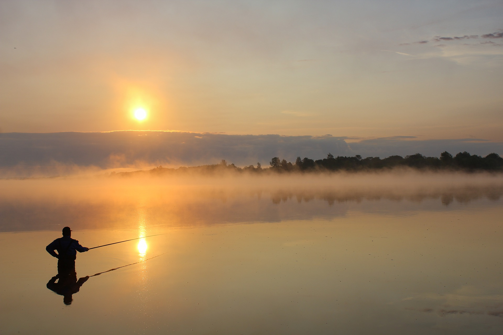

La pêche au Quebec, une activité a faire seul ou a plusieurs, qui est relaxante et accessible à tous. Au Québec, elle est pratiquée sportivement ou commercialement.

La majorité du monde pratique la pêche sportive pour le plaisir ou pour la consommations. Il existe d'innombrable type d'espèce mais les plus pêcher sont les dorés, les achigans a grosse bouche, les esturgeons, le bar rayé, le maquareau.